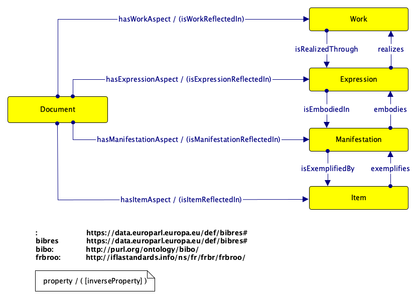

Bibliographic Resource Ontology for European Parliament
Release September 2021
- This version:
- https://data.europarl.europa.eu/def/bibres#
- Latest version:
- https://data.europarl.europa.eu/def/bibres#
- Authors:
- DATADOC, DG-ITEC - European Parliament
- Publisher:
- DG-ITEC, (European Parliament)
- Download serialization:


- License:

- Cite as:
- Retrieved from: https://data.europarl.europa.eu/def/bibres#
Abstract
This document describes the BIBRES ontology: a knowledge model made of classes and properties for describing, using the W3C's RDF(S)/OWL technology, the bibliographic resources of the European ParliamentIntroduction back to ToC
The BIBRES-EP ontology is a general model for bibliographic resources published by the European Parliament.bibres: Overview back to ToC
This ontology has the following classes and properties.Classes
- committee draft report
- committee draft report expression
- committee draft report item
- committee draft report manifestation
- committee draft report work
- document
- expression
- item
- manifestation
- work
Object Properties
- embodies
- exemplifies
- has aspect
- has expression aspect
- has item aspect
- has manifestation aspect
- has work aspect
- is embodied in
- is exemplified by
- is expression reflected in
- is item reflected in
- is manifestation reflected in
- is realized through
- is reflected in
- is work reflected in
- language
- realizes
Data Properties
Description back to ToC
The BIBRES is based on the combination of the Bibliographic Ontology (BIBO) and the FRBR-IFLA model organised into views of a bibliographic resource metadata at different levels of abstraction (Work, Expression, Manifestation, Item). According to [1], a bibliographic resource "is not equivalent to any individual Work, Expression, Manifestation, Item (WEMI) class because the definition contains parts of the semantics of each of the WEMI definitions, which are mutually exclusive. This suggests that [a Bibliographic] Resource is disjoint with each WEMI class. [A Bibliographic] Resource does not have broader scope than the combined WEMI classes because the definition is confined to the semantics of the WEMI definitions. This suggests that the attributes (intention) of [a Bibliographic] Resource have the same intention as the combined attributes of each WEMI class: Resource = Expression + Item + Manifestation + Work; the order is unimportant. That is, the aggregation of attributes of WEMI is intended to describe the same kind of object as the attributes of [a Bibliographic] Resource. The basic relationship between [a Bibliographic] Resource and WEMI is therefore whole-part/aspect: Expression, Item, Manifestation, and Work are partial aspects of Resource". The core structure of the BIBRES ontology is, therefore, designed according to such and approach and sketched in the following picture, where Document is the generic class representing whatsoever bibliographic resource.  In order to represent specific types of bibliographic resources, the core structure in the figure (either Document and each WEMI class) is specialized in a pure taxonomical approach.Cross reference for bibres classes, properties and dataproperties back to ToC
This section provides details for each class and property defined by bibres.Classes
- committee draft report
- committee draft report expression
- committee draft report item
- committee draft report manifestation
- committee draft report work
- document
- expression
- item
- manifestation
- work
committee draft reportc back to ToC or Class ToC
IRI: https://data.europarl.europa.eu/def/bibres#CommitteeDraftReport
- has super-classes
- document c
committee draft report expressionc back to ToC or Class ToC
IRI: https://data.europarl.europa.eu/def/bibres#CommitteeDraftReportExpression
- has super-classes
- expression c
committee draft report itemc back to ToC or Class ToC
IRI: https://data.europarl.europa.eu/def/bibres#CommitteeDraftReportItem
- has super-classes
- item c
committee draft report manifestationc back to ToC or Class ToC
IRI: https://data.europarl.europa.eu/def/bibres#CommitteeDraftReportManifestation
- has super-classes
- manifestation c
committee draft report workc back to ToC or Class ToC
IRI: https://data.europarl.europa.eu/def/bibres#CommitteeDraftReportWork
- has super-classes
- work c
documentc back to ToC or Class ToC
IRI: https://data.europarl.europa.eu/def/bibres#Document
- has sub-classes
- committee draft report c
- is in domain of
- has expression aspect op, has item aspect op, has manifestation aspect op, has work aspect op
expressionc back to ToC or Class ToC
IRI: https://data.europarl.europa.eu/def/bibres#Expression
- has sub-classes
- committee draft report expression c
- is in domain of
- is embodied in op
- is in range of
- has expression aspect op, is realized through op
itemc back to ToC or Class ToC
IRI: https://data.europarl.europa.eu/def/bibres#Item
- has sub-classes
- committee draft report item c
- is in range of
- has item aspect op, is exemplified by op
manifestationc back to ToC or Class ToC
IRI: https://data.europarl.europa.eu/def/bibres#Manifestation
- has sub-classes
- committee draft report manifestation c
- is in domain of
- is exemplified by op
- is in range of
- has manifestation aspect op, is embodied in op
workc back to ToC or Class ToC
IRI: https://data.europarl.europa.eu/def/bibres#Work
- has sub-classes
- committee draft report work c
- is in domain of
- is realized through op
- is in range of
- has work aspect op
Object Properties
- embodies
- exemplifies
- has aspect
- has expression aspect
- has item aspect
- has manifestation aspect
- has work aspect
- is embodied in
- is exemplified by
- is expression reflected in
- is item reflected in
- is manifestation reflected in
- is realized through
- is reflected in
- is work reflected in
- language
- realizes
embodiesop back to ToC or Object Property ToC
IRI: https://data.europarl.europa.eu/def/bibres#embodies
- has super-properties
- top object property
- is inverse of
- is embodied in op
exemplifiesop back to ToC or Object Property ToC
IRI: https://data.europarl.europa.eu/def/bibres#exemplifies
- has super-properties
- top object property
- is inverse of
- is exemplified by op
has aspectop back to ToC or Object Property ToC
IRI: https://data.europarl.europa.eu/def/bibres#hasAspect
- has sub-properties
- has expression aspect op, has item aspect op, has manifestation aspect op, has work aspect op
- is inverse of
- is reflected in op
has expression aspectop back to ToC or Object Property ToC
IRI: https://data.europarl.europa.eu/def/bibres#hasExpressionAspect
- has super-properties
- has aspect op
- has domain
- document c
- has range
- expression c
- is inverse of
- is expression reflected in op
has item aspectop back to ToC or Object Property ToC
IRI: https://data.europarl.europa.eu/def/bibres#hasItemAspect
- has super-properties
- has aspect op
- has domain
- document c
- has range
- item c
- is inverse of
- is item reflected in op
has manifestation aspectop back to ToC or Object Property ToC
IRI: https://data.europarl.europa.eu/def/bibres#hasManifestationAspect
- has super-properties
- has aspect op
- has domain
- document c
- has range
- manifestation c
- is inverse of
- is manifestation reflected in op
has work aspectop back to ToC or Object Property ToC
IRI: https://data.europarl.europa.eu/def/bibres#hasWorkAspect
- has super-properties
- has aspect op
- has domain
- document c
- has range
- work c
- is inverse of
- is work reflected in op
is embodied inop back to ToC or Object Property ToC
IRI: https://data.europarl.europa.eu/def/bibres#isEmbodiedIn
- has super-properties
- top object property
- has domain
- expression c
- has range
- manifestation c
- is inverse of
- embodies op
is exemplified byop back to ToC or Object Property ToC
IRI: https://data.europarl.europa.eu/def/bibres#isExemplifiedBy
- has super-properties
- top object property
- has domain
- manifestation c
- has range
- item c
- is inverse of
- exemplifies op
is expression reflected inop back to ToC or Object Property ToC
IRI: https://data.europarl.europa.eu/def/bibres#isExpressionReflectedIn
- has super-properties
- is reflected in op
- is inverse of
- has expression aspect op
is item reflected inop back to ToC or Object Property ToC
IRI: https://data.europarl.europa.eu/def/bibres#isItemReflectedIn
- has super-properties
- is reflected in op
- is inverse of
- has item aspect op
is manifestation reflected inop back to ToC or Object Property ToC
IRI: https://data.europarl.europa.eu/def/bibres#isManifestationReflectedIn
- has super-properties
- is reflected in op
- is inverse of
- has manifestation aspect op
is realized throughop back to ToC or Object Property ToC
IRI: https://data.europarl.europa.eu/def/bibres#isRealizedThrough
- has super-properties
- top object property
- has domain
- work c
- has range
- expression c
- is inverse of
- realizes op
is reflected inop back to ToC or Object Property ToC
IRI: https://data.europarl.europa.eu/def/bibres#isReflectedIn
- has super-properties
- top object property
- has sub-properties
- is expression reflected in op, is item reflected in op, is manifestation reflected in op, is work reflected in op
- is inverse of
- has aspect op
is work reflected inop back to ToC or Object Property ToC
IRI: https://data.europarl.europa.eu/def/bibres#isWorkReflectedIn
- has super-properties
- is reflected in op
- is inverse of
- has work aspect op
languageop back to ToC or Object Property ToC
IRI: https://data.europarl.europa.eu/def/bibres#language
- has super-properties
- top object property
realizesop back to ToC or Object Property ToC
IRI: https://data.europarl.europa.eu/def/bibres#realizes
- has super-properties
- top object property
- is inverse of
- is realized through op
Data Properties
has identifierdp back to ToC or Data Property ToC
IRI: https://data.europarl.europa.eu/def/bibres#hasIdentifier
- has range
- string
Legend back to ToC
op: Object Properties
dp: Data Properties
ni: Named Individuals